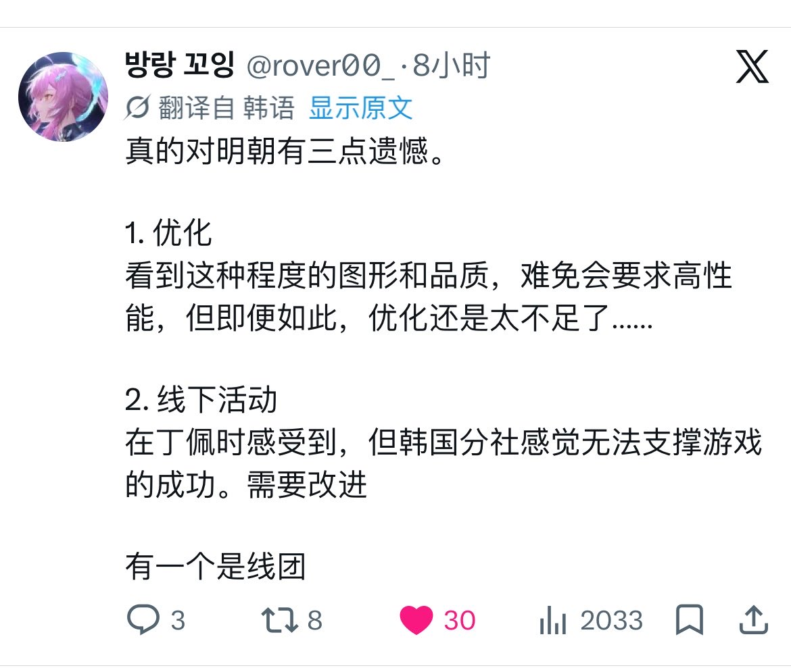

f hv
@fhv932189957574
这个翻译，还以为真的明朝😑

방랑 꼬잉
@rover00_
진짜 명조한테 아쉬운점이 3가지가 있어요.
1. 최적화
이정도 그래픽과 퀄리티를 보면 당연히 고성능을 요구할 수 밖에 없긴 하지만..그럼에도 최적화는 너무 부족해요 ...
2. 오프행사
띵페때 느꼈지만 한국지사가 게임이 잘나가는만큼 받쳐주질 못하는 느낌이 들어요. 개선해야할듯
하나는 타래